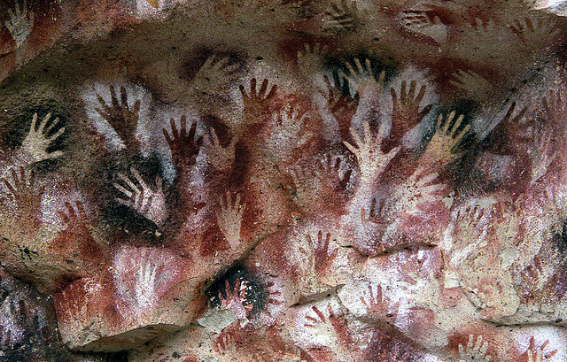

The decimal number system
According to several dictionaries, the decimal number system that we use so extensively is
▸ noun: a positional system of numeration that uses decimal digits and a base of 10
Notice that the definition correctly uses the article "a" accounting for the fact that there are other number systems, like for example the binary number system.
We always use the decimal system in real life in such an exclusive fashion that we might end up thinking that it is the one and only number system, but in fact it's just one in the crowd.

Like for example there is the Roman number system, that was used until recently.
"Recently" is the 14th. century, when the Roman numbering system began to be replaced by the more convenient Hindu-Arabic numerals; however this process was gradual, and the use of Roman numerals in some minor applications continues to this day, for example in clock faces.
Notice that the Roman numbering system does not have a zero. The zero is said to be invented by the Indians near yesr 500 A.D. and is essential to any modern number system, including the decimal and the binary systems.
Obviously the decimal number systems (the Roman system is also decimal) were somehow natural for we humans because we have ten fingers in our hands (mostly everybody).

Some people think that if would have been better if we had twelve fingers, because this would have led to a 12-based number system, being the advantage that 12 is exactly divisible by 2, 3, 4 and 6, and that would have simplified many simple arithmatic problems. But we have ten fingers so we have to settle with a number base that's only divisible by 2 and 5.
Counting with fingers
Lets imagine a method to count with our fingers. There are smarter methods, but this one is convenient for the explanation.

We are purchasing cattle, sheep. As each animal passes through a narrow door we count it by extending another finger.
After couting 10 sheep I run out of fingers but fortunately my brother is participating. He counts the number of times I run out of fingers, each time he extends one of his fingers.
After counting 100 sheep bpth me and my brother have all our fingers commited, but fortunately the family is large and another sibling comes to the rescue counting the number of times my brother ran out of fingers and so we can count up to 999 which is enough.
So we bought up to 999 sheep and it was possible to count them with the participation of only three people. Notice that if we had to count more sheep, say 9999, we would need only one additional brother (or the litle tally counter pictured above).
The binary number system
If instead of having ten fingers we had only one, would be able to count that many sheep?
Of course the answer is yes, but with a caveat: we would need more people beacuse each of us would run out of fingers sooner than if we had 10.
Let's start counting. As the first sheep passes I extend my single finger. When the second sheep comes I tell brother B to extend his finger (I'm brother A) and I flex mine. Next sheep, the third, I extend my single finger and now me and my brother B both are out of fingers so brother C joins. C extends his finger and me and B close our's. And so on.
If I represented a brother with an extended finger with the symbol "1" and a flexed finger with "0", then I would be able to represent the counting sequence thus:
| brother name → | F | E | D | C | B | A | ||
| no sheep | 0 | none | ||||||
 |
1 | one | ||||||
|
1 | 0 | two | 21 | ||||
|
1 | 1 | three | |||||
|
1 | 0 | 0 | four | 22 | |||
|
1 | 0 | 1 | five | ||||
|
1 | 1 | 0 | six | ||||
|
1 | 1 | 1 | seven | ||||
|
1 | 0 | 0 | 0 | eight | 23 | ||
|
1 | 0 | 0 | 1 | nine | |||
|
1 | 0 | 1 | 0 | ten | |||
| 11 × |
1 | 0 | 1 | 1 | eleven | |||
| 12 × |
1 | 1 | 0 | 0 | twelve | |||
| 16 × |
1 | 0 | 0 | 0 | 0 | sixteen | 24 | |
| 17 × |
1 | 0 | 0 | 0 | 1 | seventeen | ||
| 18 × |
1 | 0 | 0 | 1 | 0 | eighteen | ||
| 32 × |
1 | 0 | 0 | 0 | 0 | 0 | thirtytwo | 25 |
As can be seen, to count more than 32 sheep we need six brothers, something that was possible with only two when we used decimal numbers.
Who would want to count in this contrived way?
Digital computers do. Their single finger hand is a type of circuit called "flip-flop" that can be in one of two states: either "flipped" or "flopped", never an in-between state.
It is easy and safe to implement a circuit or other devices that work like that.

For example in hard disks, that store information digitally in the form of extremely tiny magnetized regions on a spinning platter, each region represents a binary digit, a zero or a one, depending on the polarity of the magnetic field.
Another example of binary signals are the communication channels, like for example our domestic Internet connections, that transmit streams of electric signals representing binary digits. Millions per second, depending on the price of the connection. A "6 mega internet connection" is capable of transmitting 6 megabit per second. One megabit is 1,048,576 bits or 220 bits, one of the most famous powers of 2.
bit
The word "bit" is used to designate these binary digits. It is "binary digit" without the stuffing:
binary digit
The start of the first word and the end of the last one. Enough.
Binary numbers are horrible
As we saw in the sheep counting example, binary numbers (numbers expressed in base 2) get long very quickly. Another issue is that they are made only of zeros and ones and thus they are monotonous.
It is almost impossible to remember or communicate binary numbers without making errors. For example a not-so-large number like one million expressed in binary is 11110100001001000000. How would you read this number to your aunt?
In decimal notation sometimes we use thousand separators to ba able to read lengthy numbers more safely. For example a number like 340923476504734876 is easier to read it with thousand separators 340,923,476,504,734,876 and with a bit of luck you could read it correctly.
Now, the same number in binary is this long string:
10010111011001101000001100001111000101001111110110010011100
In binary there is a sort of "thousand separators" with groups of four
instead of three as in decimal. Notice that four is a power of 2: 4 =
22 = 2 ×
2 and the powers of 2 always show up when there is digital stuff
around.
The long number would look like this:
| 0100 | 1011 | 1011 | 0011 | 0100 | 0001 | 1000 | 0111 | 1000 | 1010 | 0111 | 1110 | 1100 | 1001 | 1100 |
| 4 | b | b | 3 | 4 | 1 | 8 | 7 | 8 | a | 7 | e | c | 9 | c |
or 4bb341878a7ec9c, shorter then the decimal version.
| 0000 | 0 |
| 0001 | 1 |
| 0010 | 2 |
| 0011 | 3 |
| 0100 | 4 |
| 0101 | 5 |
| 0110 | 6 |
| 0111 | 7 |
| 1000 | 8 |
| 1001 | 9 |
| 1010 | a |
| 1011 | b |
| 1100 | c |
| 1101 | d |
| 1110 | e |
| 1111 | f |
This is not a simple separation in fixed length groups of bits but a "recodification".
In binary each 4-bit goup can have one of 16 possible values, and each value is assigned a symbol according to the table at the right.
The first 10 values, zero to 9, are conveniently assigned the symbols 0 through 9. Once we run out of digits we start with the letters "a" through "f".
Numbers expressed like this are called "hexadecimal numbers" because actually thay are not any more in base 2 but in base 16. Hence the need for 16 symbols, the 10 digits and the first 6 letters of the alphabet.
byte
▸ noun: a sequence of 8 bits (enough to represent one character of alphanumeric data)
You might heve been told once and again that all digital information is made out of bits.
But given how deadly simple a bit is, seems as if a lot of magic was needed between a set of bits and an watching an HD film in a notebook; the film obviously is made up of bits and only bits, because bits is the only thing any computer can handle and store.
The key is organization, structure. When we were counting sheep with single fingers and we added more and more brothers to hold bits, those brothers were arranged in a certain order. Not respecting the order would have led to a count error and possibly a fight with the cattle sellers with eventual deadly consequences.
A first organization level is lumping the bits in bytes. The capacities of the computer's data storage capacities are expressed in bytes. For example as of this writing hard disks tend to have capacities like 1,099,511,627,776 bytes. Obviously we don't say such a number, we say "one terabyte". This numer is another power of 2, namely 240, that is, a one followed by 40 zeros in binary notation, 10000000000 in hexadecimal.
Bytes and characters
| -0 | -1 | -2 | -3 | -4 | -5 | -6 | -7 | -8 | -9 | -A | -B | -C | -D | -E | -F | |
|---|---|---|---|---|---|---|---|---|---|---|---|---|---|---|---|---|
| 0- | ||||||||||||||||
| 1- | ||||||||||||||||
| 2- | ! | " | # | $ | % | & | ' | ( | ) | * | + | , | - | . | / | |
| 3- | 0 | 1 | 2 | 3 | 4 | 5 | 6 | 7 | 8 | 9 | : | ; | < | = | > | ? |
| 4- | @ | A | B | C | D | E | F | G | H | I | J | K | L | M | N | O |
| 5- | P | Q | R | S | T | U | V | W | X | Y | Z | [ | \ | ] | ^ | _ |
| 6- | ` | a | b | c | d | e | f | g | h | i | j | k | l | m | n | o |
| 7- | p | q | r | s | t | u | v | w | x | y | z | { | | | } | ~ | |
| 8- | ||||||||||||||||
| 9- | ||||||||||||||||
| A- | ¡ | ¢ | £ | ¤ | ¥ | ¦ | § | ¨ | © | ª | « | ¬ | | ® | ¯ | |
| B- | ° | ± | ² | ³ | ´ | µ | ¶ | · | ¸ | ¹ | º | » | ¼ | ½ | ¾ | ¿ |
| C- | À | Á | Â | Ã | Ä | Å | Æ | Ç | È | É | Ê | Ë | Ì | Í | Î | Ï |
| D- | Ð | Ñ | Ò | Ó | Ô | Õ | Ö | × | Ø | Ù | Ú | Û | Ü | Ý | Þ | ß |
| E- | à | á | â | ã | ä | å | æ | ç | è | é | ê | ë | ì | í | î | ï |
| F- | ð | ñ | ò | ó | ô | õ | ö | ÷ | ø | ù | ú | û | ü | ý | þ | ÿ |
The dictionary definition for "byte" given above is somehow wrong (grossly outdated) in the part that reads "enough". A byte, made of 8 bits, can hold exactly 28 or 256 different values. This is not enough for the asian alphabets made of thousands of different characters, neither for the myriad of occidental characters and symbols needed, check the "CopyPasteCharacter" page to see for yourself.
A byte was enough to represent the limited set of characters that was workable until computers turned really international.
The table shows a relationship between byte values and displayed or printed characters. This arrangement is one of the many possible "encodings#. This particular encoding is vastly used a gazillion web pages, millions of people aide by it, is known as "ISO 8859/1" and is an extension of the older ASCII encoding.
To interpret the table remember that a byte can be expressed as 2 hexadecimal digits. The table contains 256 calls (15 × 16) and maps from byte values to character symbols, for example the uppercase "W" is in the row with "5-" at the left and the column with "-7" at the top (try parking the mouse pointer over the "W" in the table). This means that the hexadecimal code for the "W" is 57. Checking the binary to hex table above, it's clear that the "W" in binary is 0101 0111, the equivalents of the hex digits 5 and 7.
So this is how it works at its lowest level: a massive agreement on how to interpret a bit structure, in this case a simple set of 8 bits.
Bytes and colors
This section is another example of structure. You have heard of specifications for monitor screens that mention "24 bit color" or "16 million colors", or the acronym "RGB", or "screen resolution". This section is about it.
In computer graphical output, like a screen or printed matter, the text and the images are made out of "pixels", tiny dots emitting light of a given color. If you'd look at the screen with a magnifying glass you would notice them. The pixels tidily aligned in an array.
As technology progresses the pixels tend to become smaller and smaller. A rather recent breakthrough (as of this writing, Jan 2014) the "Retina" class displays exhibit the top pixel density at 200~300+ pixels per inch (ppi), about twice as before.
With the pixel sizes shrinking, the number of pixels needed to put together a screen of the same size as before has to grow. Doubling the ppi means implies multiplying the number of pixels by 4, right? Because it affected both the vertical and the horizontal sizes.
For example the first two generations of Apple iPads had screens made up of 1024x768 pixels, and the following 3rd and 4th generations had 2048x1536 resolutions, all with 9.7 inch screens (786,432 vs. 3,145,728 pixels).
We have also witnessed the grow of the advertised number of pixels in digital photo cameras, from a few hundred thousands up to many millions.

Each pixel's color is encoded (most of the times) using 3 bytes, one for each of the three primary colors: Red, Green and Blue, thus the "RGB" acronym.
So yes, rendering an iPad retina screen requires to calculate 3 x 3,145,728 or about 9.5 million bytes. A film or a computer game at 24 frames per second displays 226,492,416 bytes per second on that devices.
Each of the three bytes of a pixel's color is treated as a number between 0 and 25 (binary 00000000 all the way through 11111111) signifying the amount of the associated color to be emitted by the pixel. If the three bytes contain zero the pixel will not emit any light of any color and the result will be black. On the other side, if all three contain the value 255 the pixel will fully emit all three colors and the outcome will be white.
From the circles diagram it can be seen that full red, full green and zero blue renders pure yellow.
Using hexadecimal notation the color for that pixel will be quantified thus: ff ff 00, the three colors in the specified order. Using decimal numbers the yellow color would be rgb(255, 255, 0).
All the possible colors are the combinations of 256 values taken 3 at a time, the number of which is 256 x 256 x 256 = 16,777,216 this the "16 million colors" meme.
|
|